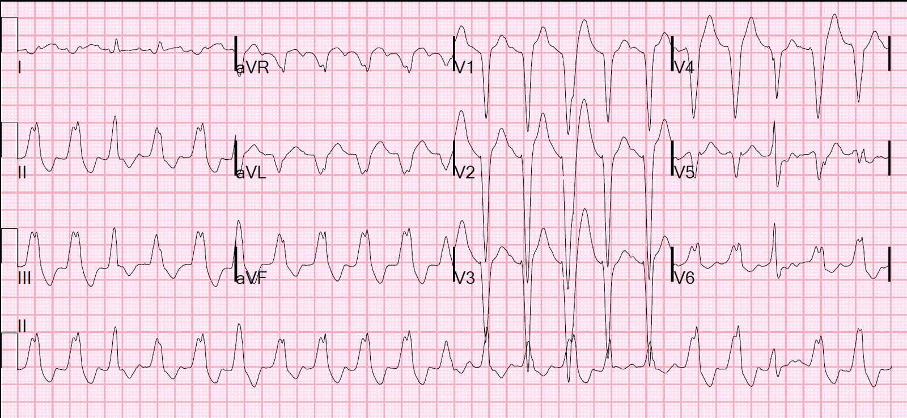
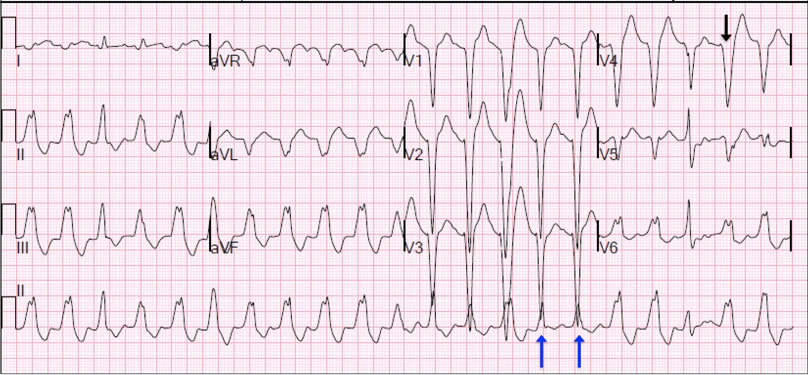
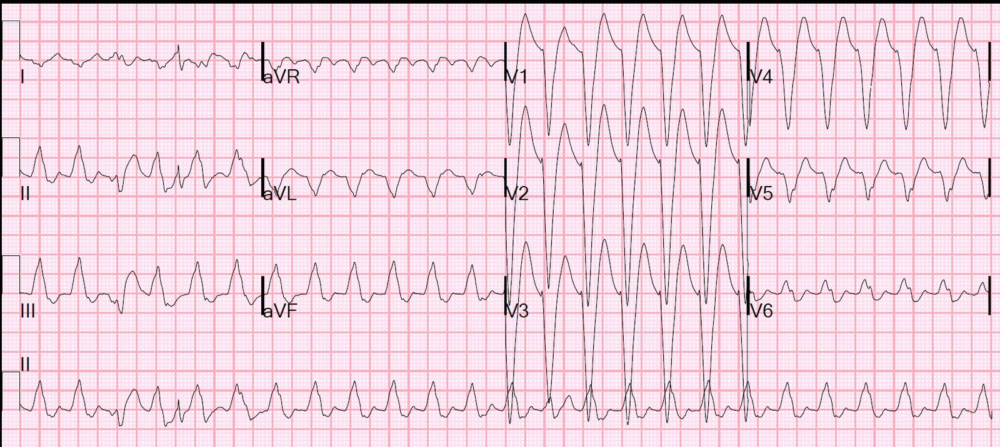
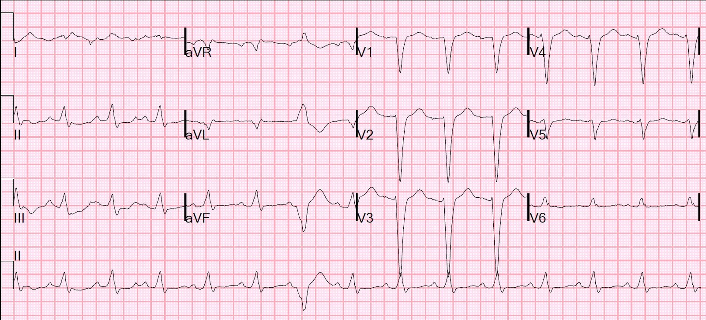

03/06/2015 — Nhịp nhanh QRS rộng kháng trị với thuốc chống loạn nhịp và sốc điện chuyển nhịp
Bản dịch tiếng Việt của bài "Wide Complex Tachycardia Refractory to Anti-dysrhythmics and Cardioversion." – Dr. Smith’s ECG Blog. Giữ nguyên toàn bộ 4 hình ảnh của bản gốc.
Ca này do Rebecca Kornas, MD, một trong các bác sĩ nội trú cấp cứu (EM Residents) của chúng tôi, đóng góp. Smith biên tập và bình luận.
Một bệnh nhân nam trung niên có
tiền sử bệnh động mạch vành (CAD), đã phẫu thuật bắc cầu chủ vành (CABG) hai nhánh và bệnh cơ tim thiếu máu cục bộ (EF 20%)
được đưa vào khoa cấp cứu (ED) sau một cơn ngừng tim
ngoài bệnh viện. Nhân viên cấp cứu ngoài viện phát hiện bệnh nhân đang rung
thất và đã bắt đầu ép tim cơ học bằng thiết bị LUCAS,
tiêm epinephrine năm lần, và thực hiện sáu lần khử rung không thành công trước khi đến ED.
Bệnh nhân được khử rung và chuyển sang một nhịp QRS rộng. Không bắt được mạch. Tiếp tục ép tim.
Siêu âm tim tại giường
lần đầu cho thấy tim có hoạt động co bóp ở mức vừa phải, nhưng ban đầu
không sờ thấy mạch nên tiếp tục ép tim. Đã cho 2 gam magnesi sulfat, 2 ống bicarbonat 50% loại 50 ml, và
3 gam calci gluconat vì nghi ngờ tăng kali máu. Ngoài ra, đã dùng 300 mg amiodarone và
sau đó một liều bolus duy nhất 100 mg lidocaine.
Bình luận về liều lidocaine: Để có hiệu quả, lidocaine phải được nạp bằng nhiều liều bolus. Với người nặng 80 kg, cho 100 mg, sau đó cho 50 mg mỗi 5 phút, 3 liều (tổng cộng 250 mg trong 15 phút), rồi bắt đầu truyền liên tục 2-4 mg/phút.
Tính theo mg/kg: 1-1,5 mg/kg, tiếp theo là 0,5 đến 0,75 mg/kg, cho đến tổng liều tối đa khoảng 3 mg/kg.
Diễn biến lâm sàng (tiếp):
Siêu âm tim tại giường lần thứ hai cho thấy hoạt động co bóp mạnh hơn và sờ thấy mạch quay và mạch đùi.
Trong lúc đặt đường vào tĩnh mạch đùi để làm hạ thân nhiệt cho bệnh nhân, điện tâm đồ 12 chuyển đạo đầu tiên được ghi:


Nên nghiêng về phía xử trí nhịp nhanh QRS rộng (wide complex tachycardia) như nhịp nguy hiểm nhất có thể có: nhịp nhanh thất. Đặc biệt ở bệnh nhân trung niên hoặc lớn tuổi, đặc biệt khi có tiền sử bệnh cơ tim, và đặc biệt khi có sẹo mở xương ức gợi ý bệnh tim thiếu máu cục bộ.
Các bác sĩ điều trị không hoàn toàn chắc chắn về nhịp chính xác là gì.
Tuy nhiên, có một số dấu hiệu cho thấy bệnh nhân đang ở trong nhịp nhanh thất.
Phân tích điện tâm đồ đầu tiên:
Có nhịp nhanh QRS rộng tần số 125, hình dạng LBBB (sóng r ban đầu nhỏ ở các chuyển đạo trước tim phải, sóng S sâu, và sóng R dương ở V6).
Có phải là hình thái LBBB thật không? Không! Lưu ý khoảng RS 120 ms ở V4 (mũi tên đen bên dưới), với thời gian từ khởi đầu đến đáy sóng S lớn hơn 100 ms (tất cả đều quá dài đối với LBBB bình thường). Quan trọng là, có một số nhát hỗn hợp (fusion beats) ở chuyển đạo II (xem các mũi tên xanh bên dưới).
Các nhát không phải nhát hỗn hợp ở V1 và V2 có thời gian QRS dạng LBBB là 180 ms. Thông thường thời gian QRS của LBBB không quá 170 ms trừ khi có tăng kali máu.
Cùng điện tâm đồ (đầu tiên) đó, có chú thích bằng mũi tên:


Diễn biến lâm sàng:
Kali máu là 2,9 mEq/L, nhưng điều này đã không được chú ý. (Bình luận: Đây rất có thể là nguyên nhân của nhịp nhanh; trong VT kháng trị, cần điều chỉnh K về mức bình thường, trong khoảng 4,0 đến 4,5 mEq/L)
Sau đó tần số tim của bệnh nhân tăng lên 148-152 nhịp/phút và nhịp có vẻ hơi khác.
Một điện tâm đồ khác được ghi.


Bản ghi này trông gần như giống hệt điện tâm đồ ban đầu, nhưng với tần số khác và các khoảng hơi hẹp hơn. Đây có phải là cuồng nhĩ kèm LBBB? SVT kèm LBBB? Hay vẫn là VT? Tại sao tần số VT này lại khác?
Bệnh nhân có huyết áp khoảng 140 mấy/90 mấy và
có tưới máu. Đã có một cuộc thảo luận về việc đây là cuồng nhĩ
kèm LBBB hay VT.
Nhằm cắt một cơn
SVT có thể có, adenosine được tiêm tĩnh mạch nhanh: 6 mg, rồi 12 mg, rồi 18 mg, nhưng không thấy sóng P bị blốc hay nhịp nhanh bị cắt
trên dải nhịp. Cũng không làm lộ ra cuồng nhĩ.
Đã thử sốc điện chuyển nhịp đồng bộ
với 150 joule — rồi 200 joule — rồi 200 joule sau khi tối ưu hóa
vị trí đặt miếng dán. Bệnh nhân vẫn ở trong nhịp nhanh QRS rộng
này, nhưng có một nhát bắt được (capture beat) thoáng qua ngay sau khi bị sốc điện.
Bệnh nhân được chuyển đến phòng thông tim.
Tại phòng thông tim,
bệnh nhân được ghi nhận các cầu nối còn thông và không có tổn thương mới ở
động mạch mũ. RCA tự thân bị tắc 100%, điều này cho thấy nhiều khả năng
ổ vào lại gây nhịp nhanh thất của bệnh nhân là do sẹo.
Trong phòng thông tim, bệnh nhân được
cho thêm lidocaine và Kali được điều chỉnh tối ưu. Vào khoảng thời gian này, tạo nhịp vượt tần số (overdrive pacing) ở tần số 240 mấy được thực hiện, và lúc đó bệnh nhân chuyển về
nhịp xoang bình thường. Bệnh nhân được
duy trì truyền lidocaine liên tục tại MICU và chuyển sang digoxin,
carvedilol và mexiletine.
Điện tâm đồ sau khi chuyển về nhịp xoang.


Bệnh nhân được đặt ICD. Bệnh nhân hồi phục tốt.
Quy tắc Sasaki để chẩn đoán VT:
Ca này không đáp ứng tất cả các tiêu chuẩn, tuy nhiên, đây là một quy tắc thú vị (chưa được thẩm định) đáng để ôn lại.
1. Có sóng R ban đầu ở aVR? Nếu có thì là VT, nếu không thì chuyển sang bước 2.
2. RS dài nhất ở các chuyển đạo trước tim lớn hơn 100 ms?
Nếu có (như trong ca này) thì là VT. Nếu không thì chuyển sang bước 3.
3. Sóng r- hoặc q- ban đầu ở bất kỳ chuyển đạo nào lớn hơn 40 ms? Nếu có thì là VT. Nếu không thì là SVT kèm dẫn truyền lệch hướng.
Quy tắc này có lẽ quá đơn giản và chưa được thẩm định. Nhưng chính sự đơn giản của nó cũng là một ưu điểm.
Những điểm cần học
1. Nếu RS lớn hơn 100 ms ở bất kỳ chuyển đạo nào, hãy nghĩ đến VT
2. Nhận biết nhát hỗn hợp. Trong nhịp nhanh QRS rộng, chúng hầu như chỉ xuất hiện trong VT (có ngoại lệ).
3. Thời gian QRS của LBBB thường nằm trong khoảng 120-170 ms. Dài hơn mức đó thì nên tăng nghi ngờ VT hoặc tăng kali máu.
4. Lidocaine phải được cho bằng nhiều liều bolus liên tiếp
5. VT kháng trị với mọi biện pháp điều trị khác có thể được chuyển nhịp bằng tạo nhịp vượt tần số, biện pháp được hướng dẫn ACC/AHA xếp khuyến cáo nhóm IIb cho VT dai dẳng liên tục (incessant VT).
6. Tôi không tìm thấy báo cáo nào về tạo nhịp vượt tần số bằng máy tạo nhịp qua da, nhưng tôi không thấy lý do gì khiến cách đó lại không hiệu quả tương tự.
Các ca VT thú vị khác:
Wide complex tachycardia in a 36 year old (Nhịp nhanh QRS rộng ở một người ba mươi sáu tuổi)
Wide Complex tachycardia: VT or SVT with aberrancy? (Nhịp nhanh QRS rộng: VT hay SVT kèm dẫn truyền lệch hướng?)
VT hay SVT kèm dẫn truyền lệch hướng: đây là trình tự phân tích mà tôi (Smith) sử dụng:
Cân nhắc trong bối cảnh tình huống lâm sàng.
(Không điều nào dưới đây áp dụng cho VT phân nhánh (fascicular VT) hay VT đường ra thất phải, là những loại liên quan đến tim có cấu trúc bình thường và khởi phát trong hoặc gần các sợi dẫn truyền. Tuy nhiên, đây là những ngoại lệ hiếm gặp):
a. Trong các WCT, VT thường gặp hơn SVT
b. Bệnh nhân lớn tuổi lại càng có khả năng bị VT hơn
c. Bất kỳ tiền sử bệnh cơ tim, nhồi máu cơ tim (MI), bệnh tim cấu trúc hay bệnh mạch vành nào cũng làm khả năng VT cao hơn nhiều
Sau đó xem xét điện tâm đồ.
Nguyên lý chung của hầu hết các VT (không phải VT phân nhánh “vô căn”) là phần đầu của QRS được khởi phát trong cơ tim, KHÔNG phải trong các sợi dẫn truyền, và vì vậy nó dẫn truyền chậm. Do đó, phần đầu của QRS thay đổi điện thế một cách CHẬM (rộng). Đây là những gì tôi tìm để chẩn đoán VT:
1. QRS càng dài thì càng có khả năng là VT. Thời gian QRS lớn hơn 140 ms nhiều khả năng là VT, dù đây không phải là tiêu chí phân biệt thật sự đáng tin cậy. Tuy nhiên, thời gian QRS 200 ms hầu như luôn là VT hoặc dẫn truyền lệch hướng kèm tăng kali máu. Do đó ca này rất có khả năng là VT.
2. Phân ly nhĩ thất rõ ràng? Thì là VT, nếu không:
3. Nhát hỗn hợp rõ ràng? Nếu có (như trong ca này) thì là VT, nếu không:
4. Các chuyển đạo V1-V6 cùng một chiều (không có RS hay SR) và “đồng hướng“ (cùng một hướng)? Thì là VT
5. Nếu có phức bộ RS ở các chuyển đạo trước tim (tức là chúng không đồng hướng): có phức bộ RS trước tim nào có thời gian từ khởi đầu sóng R- đến đáy sóng S- lớn hơn 100 ms không? Thì là VT (như trong ca này).
6. Hình dạng LBBB hoặc RBBB bất thường (xem link này để thấy một hình từ bài báo của Brugada):
—-hình dạng RBBB hoặc LBBB bình thường làm SVT rất có khả năng: cả hai đều có sóng lệch ban đầu nhanh, là sóng r trong LBBB và rS trong RBBB, theo sau là phần sau của QRS dẫn truyền chậm.
a. Nếu có hình dạng LBBB, sóng r ban đầu có lớn hơn 50 ms không? Hoặc thời gian từ khởi đầu QRS đến đáy sóng S ở V1-V3 có lớn hơn 60-70 ms không? Nếu có thì đây không phải LBBB thật. VT. Trong ca này, khoảng đó là 100 ms.
b. Nếu có hình dạng RBBB, có sóng R một pha không? Hoặc sóng R đầu tiên của Rsr’ lớn hơn sóng thứ hai? Thì là VT.
7. Sóng R ban đầu ở aVR (không phải sóng r, không có sóng q đi trước)? Thì là VT
8. Nếu sóng lệch ban đầu ở aVR là sóng r hoặc sóng q, nó có lớn hơn 40 ms không? Nếu có thì là VT